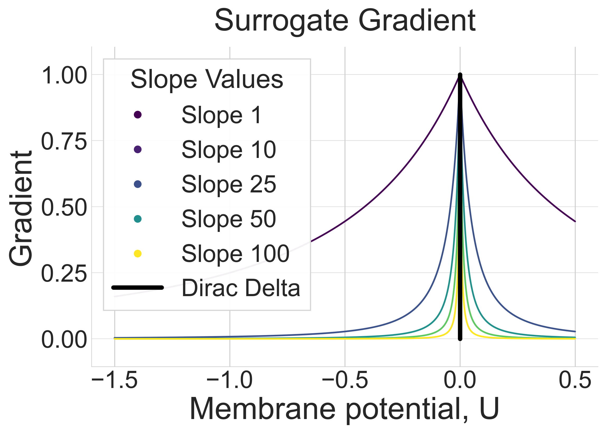
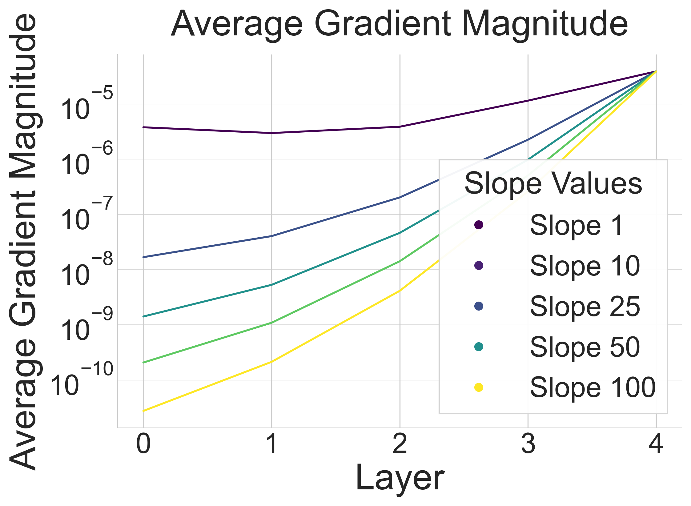
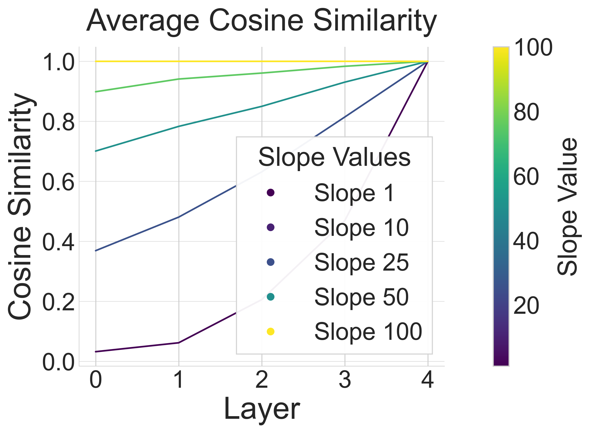
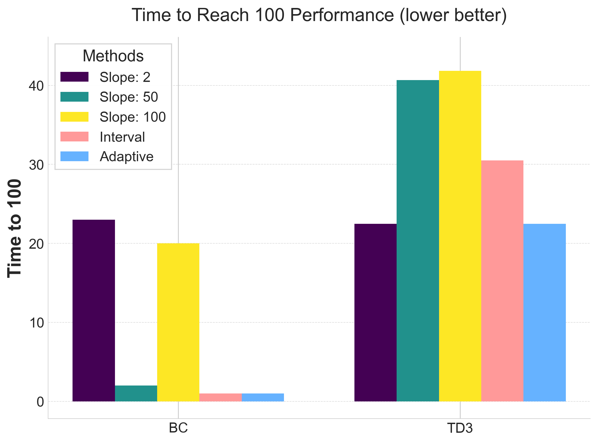
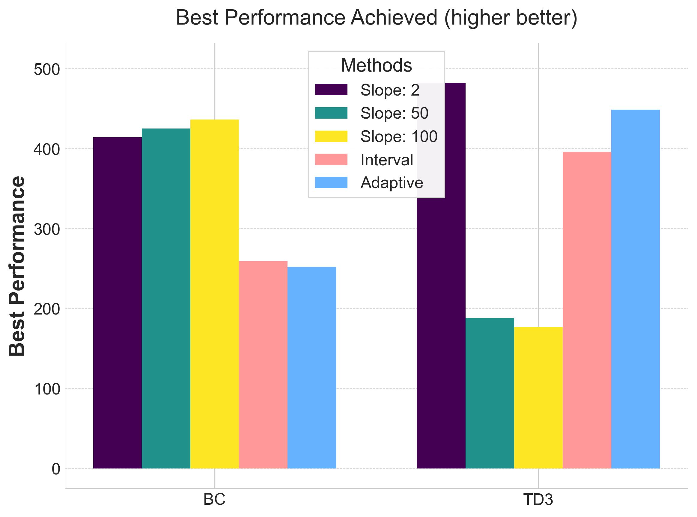

Spiking Neural Networks (SNNs) offer native temporal processing and improved energy efficiency compared to conventional deep learning. However, training SNNs remains challenging due to the non-differentiable nature of spiking neurons. This research investigates how surrogate gradient slope settings affect training performance across supervised learning and reinforcement learning scenarios.
The Non-Differentiability Problem
Spiking neurons accumulate membrane potential until exceeding a threshold, then emit a discrete spike and reset. This spiking behavior is inherently non-differentiable, making traditional backpropagation impossible. Surrogate gradients solve this by approximating the spike function's derivative with a continuous, differentiable function.
A critical hyperparameter is the slope k of the surrogate function, which determines gradient sensitivity near the spiking threshold. We examine configurations ranging from shallow (k=1) to steep (k=100).

Steeper slopes closely resemble the Dirac delta but restrict non-zero gradients to a narrow input range. Shallower slopes increase gradient magnitude but introduce noise.
Gradient Propagation in Deep Networks
Surrogate gradient slope settings profoundly affect gradient propagation. Steeper slopes maintain gradient accuracy but restrict non-zero gradients. Shallower slopes allow more weight updates but introduce noise.

Shallower slopes carry gradients deeper through the network, suffering less from vanishing gradients. Layer 0 is the first hidden layer; layer 4 is the output.
Gradient Direction Analysis
We analyze the relationship between steep surrogate gradients (k=100), which approximate the true gradient, and shallow surrogate gradients using cosine similarity:

Shallower slopes introduce bias and variance. At shallow slopes, cosine similarity approaches zero—weight updates in deep networks become essentially random.
Supervised vs. Reinforcement Learning
The optimal slope setting varies significantly between learning paradigms:
Supervised Learning
Final performance is largely unaffected by slope setting, though training dynamics vary:
- Shallow slopes: Add noise, require more updates, potentially improve exploration
- Steep slopes: Small gradient magnitudes slow progress but maintain accuracy
- Intermediate slopes: Balance between magnitude and accuracy
Reinforcement Learning
Online RL shows pronounced preference for shallower slopes. The reduced cosine similarity introduces noise that naturally enhances exploration, similar to parameter noise techniques. However:
- Higher variability in final performance across runs
- Increased risk of poor updates corrupting the replay buffer
- Less stable training due to low-quality experiences
Adaptive Slope Scheduling
Beyond fixed slopes, we investigate two scheduling methods:
1. Interval Scheduling
Gradually changes slope from 1 to 100 at fixed intervals during training—systematic transition from exploration-friendly shallow slopes to accurate steep slopes.
2. Adaptive Scheduling
Uses a weighted sum of reward score history and its derivative:
The proportional term prevents slope decrease when maximum performance is reached, avoiding destruction of progress.

Scheduled slope settings significantly reduce epochs needed to reach reward=100.

Final performance matches fixed-slope experiments, but with improved training efficiency.
Key Findings
Summary
- Training Efficiency: Scheduled slopes reduce epochs needed to reach target performance
- Performance Parity: Scheduled slopes match optimal fixed slopes
- No Hyperparameter Sweeps: Scheduling eliminates need for exhaustive slope tuning
- Learning Regime Dependence: Optimal slopes differ between SL and RL
- Exploration vs. Accuracy: Shallow slopes enhance exploration but introduce noise
Practical Recommendations
For Supervised Learning
Use steep slopes (k=50-100) or scheduled slopes transitioning from shallow to steep. Focus on gradient accuracy while ensuring sufficient gradient flow.
For Reinforcement Learning
Use shallow slopes (k=1-10) or adaptive scheduling responding to training progress. The added noise enhances exploration, crucial for RL tasks.
For Unknown Scenarios
Use adaptive scheduling to automatically adjust based on training progress—robust solution adapting to task and architecture characteristics.